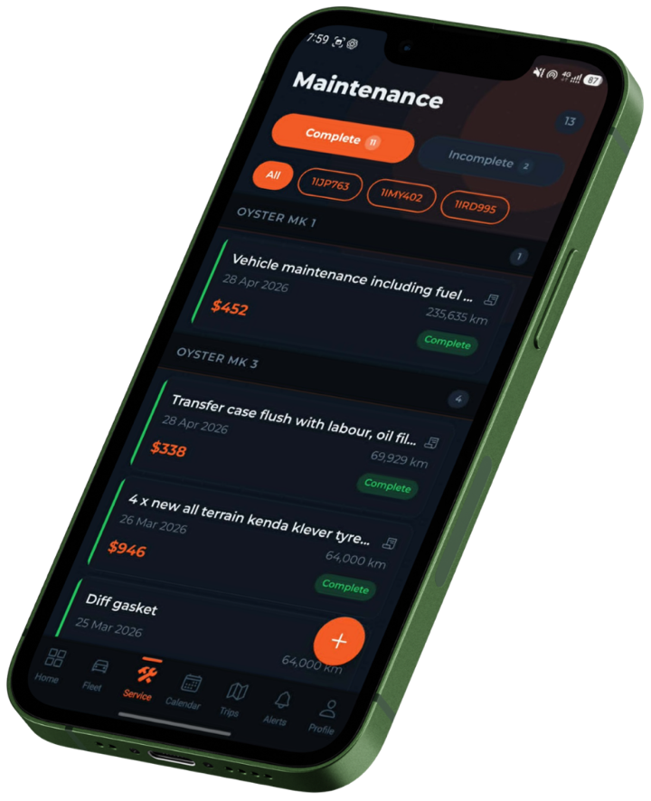

FleetTrack Pro by Nightshift Systems is a simple Fleetio alternative for Australian small fleet operators who need vehicle servicing reminders, AI receipt scanning, GPS trip logs, compliance reminders, and fleet cost tracking without the complexity of enterprise fleet software. Built in Perth for operators running 1–75 vehicles.
Small fleet operators aren't running a transport enterprise. They're asking simpler, more urgent questions: Which vehicle is due for a service this week — and has it actually been booked? How much has each vehicle cost in parts and labour over the past three months? Where did that fuel docket from Tuesday go? Is the rego on the work truck expiring before the end of the month? Can I stop tracking all of this in three different spreadsheets that break every time someone adds a column?
FleetTrack Pro by Nightshift Systems is a fleet maintenance app built to answer those questions — not the questions a fleet manager at a 200-vehicle logistics company needs answered. If you're running 1 to 75 vehicles in Australia, it's built for your situation.
Set km-based and time-based service intervals per vehicle. Get alerted when a vehicle is overdue — before a customer picks it up or a job goes out the door.
Photograph a fuel docket or mechanic invoice. AI extracts the cost and description automatically and links it to the vehicle. No more receipts in the glovebox.
Start and stop trips from the app. Route, distance, duration, and driver are recorded automatically. Business vs personal tagging built in.
Registration and insurance expiry dates tracked per vehicle with overdue warnings. Mark renewed in one tap. No more missed rego dates.
Build customisable pre-trip, post-trip, and walkaround checklists. Drivers tick off items, add notes, and attach photos. Owner and manager can create templates — completed inspections are stored per vehicle with full history.
See exactly what each vehicle costs per month — parts, labour, fuel. PDF and CSV export for your accountant or tax time.

Fleetio is a capable platform that serves a wide range of fleet sizes and structures. FleetTrack Pro is a more focused tool built for small Australian operators who want the essentials done well, without the overhead.
| Feature | FleetTrack Pro | Fleetio |
|---|---|---|
| Built for small fleets (1–75 vehicles) | Yes — purpose-built | Yes, but broader scope |
| Australian small business focus | Yes — Perth-built, AUD pricing | Not specifically |
| AI receipt scanning | Yes — built-in, all paid plans | Varies by plan / integration |
| GPS trip logging | Yes — built-in | Via integrations |
| Service interval reminders | Yes | Yes |
| Compliance reminders (rego, insurance) | Yes — with overdue alerts | Yes |
| PDF / CSV fleet reports | Yes — Starter plan and above | Yes |
| Mobile-first Android app | Yes — Android app | Web + mobile |
| Pricing in AUD | Yes — $0 / $19 / $49 / $99/mo | USD pricing |
| Inspection checklists | Yes — customisable templates, photos | Yes — via inspections module |
| Custom compliance fields | Yes — any date-based requirement | Limited |
| 14-day free Pro trial | Yes — no credit card required | Trial available |
| Best for | Small operators wanting simplicity | Larger or growing fleets needing advanced controls |
FleetTrack Pro was built by the founder of Open Shell Adventures, a Perth-based 4WD adventure hire business. After years of tracking vehicle servicing across five 4WDs in spreadsheets, keeping fuel receipts in glovebox compartments, and missing insurance renewal dates because they were buried in a calendar reminder that nobody checked — the decision was made to build something that actually fit how a small operator works.
"Every feature in FleetTrack Pro exists because we needed it ourselves. We use it every day on our own vehicles before we ask anyone else to trust it with theirs."
FleetTrack Pro by Nightshift Systems is the result. It's not a watered-down enterprise fleet system — it's a tool built from the ground up for operators running a handful of vehicles who need to know when they're due for service, what they've cost, and that their compliance is in order. It's available on Android, priced in Australian dollars, and built by a team that uses it on real vehicles every week.
14-day free trial of the Pro tier. No credit card required. Starts working the moment you add your first vehicle.
See plans & get started